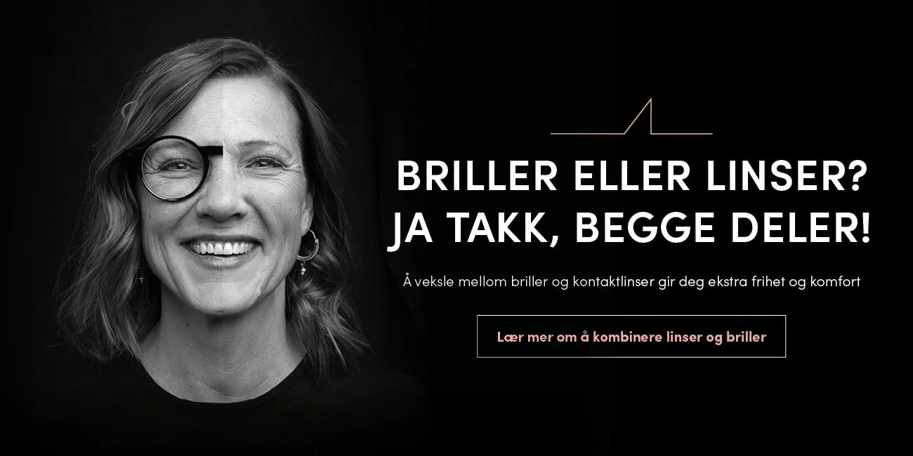

Forside / Briller
Briller
Innfatning, glass og tilpasning skal henge sammen. Vi hjelper deg å velge noe du faktisk vil bruke — ikke bare noe som ser bra ut i butikken.
Form, bruk og komfort
Vi ser på ansiktsform, styrke og hva du bruker brillene til. Sitter de ikke godt, blir de liggende — uansett hvor fine de er.
- Innfatninger i flere materialer og priser
- Glass tilpasset skjerm, bil og ute
- Justering og service etterpå
- Solbriller med styrke

Trygghet for brillene
Uhell kan skje — og styrken kan endre seg. Brilleforsikringen dekker begge deler, og de to første månedene er gratis.
- Forsikring fra 36 kr per måned
- Tillegg for endret brillestyrke: 17 kr ekstra per måned
- Gratis de to første månedene
Vilkårene er hentet fra Centrum Optikk sin egen informasjon om brilleforsikring.
Om briller
Kan jeg bruke brillene mine mens jeg venter på nye?
Ja. Vi justerer gjerne de gamle slik at de fungerer fram til de nye er klare.
Hvor lang tid tar det før brillene er ferdige?
Det kommer an på glassene. Enkle glass er ofte klare i løpet av noen dager.
Får jeg hjelp til å velge innfatning?
Selvfølgelig. Vi ser på både utseende, styrke og hvordan du bruker brillene til daglig.
Vil du se på nye briller?
Kom innom, eller bestill time først.